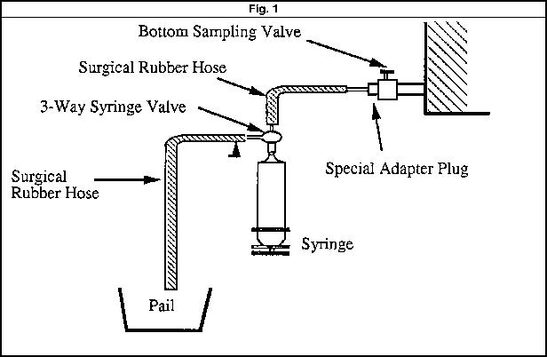
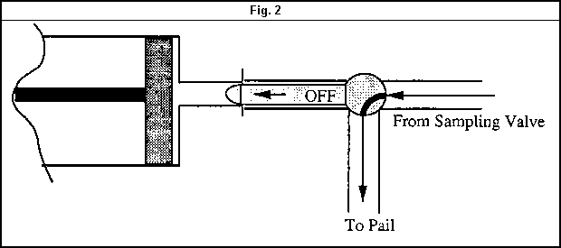
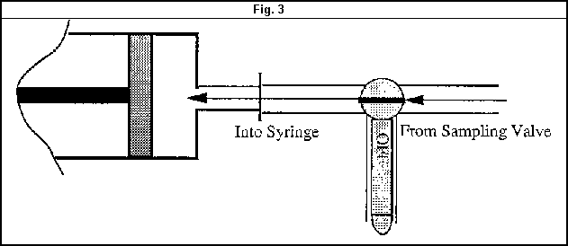
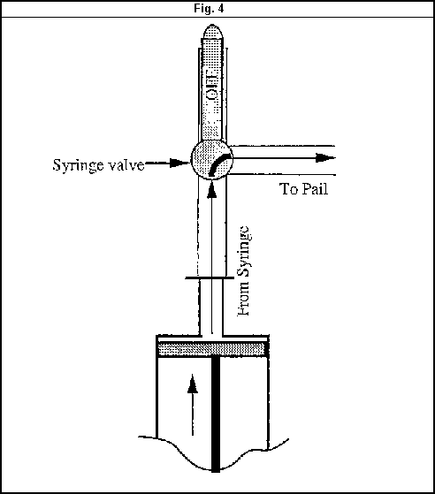
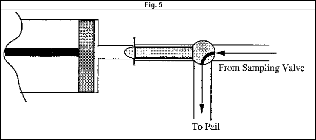
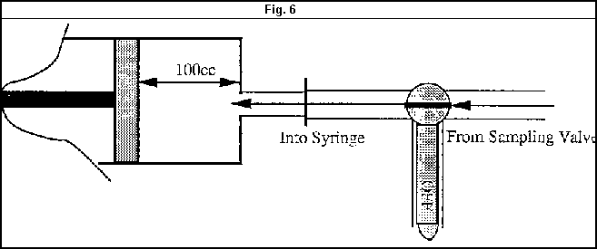

|
| الإجراءات الفنية |
محطات المحولات |
|
|
المهمات:
مهمات محطات المحولات الكبيرة
محولات القوى |
رقم المستند: T-001-r1a |
| صادر إلى:
الشبكات |
| الحالة:
معتمد |
|
الإجراء:
أخذ عينة زيت العزل (P1-Y1) |
تاريخ الاعتماد: 23 ديسمبر 1996 |
| تاريخ المراجعة: مارس 2012 |
المقدمة
يوصى بأخذ عينات زيت للتحليل المعملي كل عام واحد، ويمكن تعديل هذه المدة بناءً على طلب المعمل الكيميائي المركزي ولجنة الاعتماد.
الغرض من هذا الإجراء هو توفير طريقة لأخذ العينات لنوعين من الاختبارات التشخيصية التي يتم إجراؤها على زيت عزل المحولات:
- الاختبارات الأساسية للزيت.
- تحليل الغازات المذابة في الزيت.
يتم الحصول على زيت العزل المستخدم في محولات القوى عن طريق التقطير التجزيئي للزيت المعدني الذي يتكون من أكثر من ألفي مركب هيدروكربوني. ومع ذلك، هناك تسعة فقط من هذه المركبات في حالتها الغازية تعتبر مهمة في تحليل الغازات المذابة في زيت العزل، وهي: الأسيتيلين، ثاني أكسيد الكربون، أول أكسيد الكربون، الإيثان، الإيثيلين، الهيدروجين، الميثان، النيتروجين والأكسجين.
علاوة على ذلك، ستة من هذه الغازات قابلة للاشتعال، ويعتبر وجودها مؤشراً على حدوث ارتفاع مفرط في درجة الحرارة، أو توصيلة غير محكمة، أو انهيار في تكوين السليلوز، أو حدوث شرارة كهربائية، أو تفريغ جزئي، أو تفريغ هالي (Corona) داخل المحول. وعندما تذوب هذه الغازات في الزيت، فإنها تقلل من نقطة الوميض وتتسبب في انهيار مبكر. يعتبر تحليل الغازات المذابة في الزيت أقوى طريقة غير اختراقية متاحة لتشخيص واختبار زيت المحول.
تحدد الاختبارات الأساسية للزيت قوة العزل الكهربائي، ورقم التعادل، والتوتر السطحي البيني (الملوثات القابلة للذوبان)، ومحتوى الرطوبة في الزيت.
احتياطات السلامة
- يجب إصدار تصريح عمل.
- يجب أن يحمل طاقم الصيانة المؤهل فئة السلامة المناسبة.
- يجب وضع سياج أمان مع علامات تحذيرية حول منطقة العمل.
- ارتدِ معدات السلامة والصحة المهنية مثل خوذة السلامة وحذاء السلامة، إلخ.
- هناك خطر السقوط في حفرة احتواء الزيت عند العمل بالقرب من محولات القوى الكبيرة.
الاحتياطات الكيميائية
- يجب أخذ العينات في أيام صافية، مع اتخاذ الاحتياطات للحماية من التلوث بالأتربة وجزيئات الرمال التي تحملها الرياح.
- يوصى بأخذ عينات الزيت عند درجة حرارة التشغيل الطبيعية للمحول.
- اقرأ وسجل درجة حرارة الزيت قبل أخذ العينة.
- يوصى باستخدام زجاجات زجاجية بنية ذات عنق صغير ونظيفة تمامًا، بسعة 1000 مل (1 لتر). يطلب المعمل الكيميائي المركزي زجاجتين سعة كل منهما 1 لتر من عينة الزيت.
- يوصى بأخذ عينات الزيت فقط في ظروف بيئية جافة وصافية.
الأدوات والمعدات
- طقم أدوات متكامل.
- معدات السلامة والصحة المهنية.
- زجاجتان من الزجاج البني ذات عنق صغير نظيفتان لأخذ العينات، السعة 1000 مل (1 لتر).
- قماش للتنظيف، وملصقات.
- زجاجات أخذ عينات، حقنة (Syringe)، سدادة مهايئ، خرطوم مطاطي جراحي، صمام ثلاثي الاتجاهات.
خطوات العمل
شطف صمام أخذ العينة
- قم بتنظيف المنطقة المحيطة بصمام أخذ العينة السفلي.
- افتح صمام أخذ العينة السفلي الموجود في المحول وقم بتصريف حوالي لتر واحد من الزيت في وعاء لتنظيف داخل الصمام.
- اغسل داخل زجاجة أخذ العينات (وهي نظيفة وجافة) بزيت مأخوذ مباشرة من المحول.
- املأ الزجاجة بالزيت من خلال صمام أخذ العينة ببطء شديد لتجنب دخول فقاعات الهواء في عينة الزيت.
- إذا كان المحول يحتوي على صمام أخذ عينة زيت علوي، كرر الخطوات من 1 إلى 4.
- ضع ملصقات على الزجاجات بشكل صحيح، على أن تتضمن اسم المحطة، اسم الشركة المصنعة للمحول، سنة الصنع، مقنن المحول، تاريخ أخذ العينة، مع توضيح ما إذا كان الزيت من أعلى أو من أسفل.
أخذ عينات للاختبارات الأساسية للزيت
- قم بتنظيف صمام أخذ العينة بعناية من الغبار والأوساخ. (الشوائب التي تؤثر على قوة العزل للزيت تتواجد غالباً في قاع خزان المحول، لذلك يكون صمام أخذ العينة الصغير موجوداً على صمام التصريف الرئيسي أو بالقرب منه).
- قم بتصريف كمية صغيرة من الزيت العازل في وعاء لغسل صمام أخذ العينة والخط.
- املأ زجاجة العينة بالزيت حتى النصف، ثم رج الزجاجة جيداً وقم بتفريغ الزيت في الوعاء.
- الآن املأ زجاجة العينة بالزيت ببطء شديد لتجنب تكوّن فقاعات الهواء.
- أغلق الزجاجة بإحكام وجهزها لإرسالها إلى المعمل.
- يجب إبقاء العينة بعيداً عن التعرض لأشعة الشمس المباشرة.
- تأكد من وضع الملصق الصحيح على زجاجة العينة.
- تأكد من ملء ورقة بيانات العينة المرفقة.
- أرسل عينة الزيت إلى المختبر في أسرع وقت ممكن.
أخذ عينات لتحليل الغازات المذابة في الزيت
- ركب ترتيب خرطوم نظيف مصنوع من المطاط الجراحي وصمام معملي ثلاثي الاتجاهات على صمام أخذ عينات المحول كما هو موضح في الشكل 1 أدناه.

- أدر صمام الحقنة إلى وضع الشطف (Flush)، وافتح صمام أخذ عينات المحول واسمح للزيت بالتدفق حتى يتم طرد كل الهواء المحبوس في الخرطوم. (الشكل 2)

- أدر صمام الحقنة إلى وضع الملء (Fill) واسمح لحوالي عشرة (10) مل من الزيت بالدخول إلى الحقنة. أغلق صمام المحول وقم بإزالة الحقنة (الشكل 3)

- احمل الحقنة رأسياً بحيث تكون الفتحة متجهة لأعلى واطرد أي فقاعات هواء. اضغط المكبس إلى علامة الصفر وأغلق صمام الحقنة. (الشكل 4)

- أعد تركيب الحقنة، والتي أصبحت الآن خالية من الفقاعات ويمتلئ حجمها الميت بالزيت، في الفتحة الموجودة في السدادة.
- أعد فتح صمام أخذ عينات المحول واسمح للزيت بالتدفق عبر منفذ الشطف الخاص بصمام الحقنة. (الشكل 5)

- أدر صمام الحقنة إلى وضع الملء (Fill) واسمح لضغط الزيت بدفع المكبس للخلف حتى تحتوي الحقنة على حوالي 100 مل من الزيت. (الشكل 6)

ملاحظات:
- إذا أمكن، لا تسحب المكبس للخلف يدوياً لأن ذلك قد يؤدي إلى تسرب جوي وتكوين فقاعات (دخول الهواء).
- لا تملأ الحقنة بأكثر من 100 مل لضمان الإحكام الكافي على طول المكبس. أغلق صمام الحقنة وصمامات المحول. أزل الحقنة والسدادة المثقوبة. قم بسد مدخل صمام أخذ العينات.
- قم بملء بطاقة التعريف المرفقة مع إعطاء معلومات مثل الرقم التسلسلي للمحول، المقنن، سنة الصنع، حجم زيت خزان المحول باللترات، الرقم التسلسلي للحقنة، تاريخ أخذ العينة، إلخ.
الشحن
قم بتعبئة العينات في صناديق الحقن المتوفرة. املأ كل المساحات الفارغة بمادة تعبئة خالية من الغبار. أرسل العينات إلى المعمل الكيميائي التابع للهيئة في أسرع وقت ممكن.
الموقع: كود المعدة:
تمت المراجعة بواسطة: التاريخ: التوقيع: